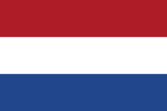

‹Studiază în Olanda 
Țările de Jos, sau Olanda: unul dintre cele mai populare țări din Europa pentru studenții internaționali. Nu este de mirare, având unele dintre cele mai bune universități din lume, o abordare modernă a educației și un mediu primitor.
În Europa, Țările de Jos au fost printre primele să adopte sistemul de licență/master și să ofere programe de studii în limba engleză. Acest lucru a condus la una dintre cele mai mari selecții de cursuri de pe continent. Poți alege între numeroase programe de licență și master la aproximativ 70 de instituții de învățământ superior.
Te poți aștepta, de asemenea, la o comunitate mare de studenți internaționali: Peste 112.000 de studenți din întreaga lume. Aproximativ 16% din totalul studenților provin din străinătate - una dintre cele mai mari proporții din Europa.
La fel ca în alte țări europene, universitățile din Olanda sunt adesea clasificate fie ca "universități de cercetare", oferind programe academice mai orientate către cercetare, fie ca "universități de științe aplicate", oferind programe de studiu mai orientate către practică.
Un stereotip despre olandezi este că au negocierea în sânge. Olanda, cu istoria sa maritimă, a fost de mult timp o națiune importantă pentru comerțul internațional. Aici a fost inventat conceptul de societate pe acțiuni.
Unele dintre cele mai mari companii din lume sunt olandeze, iar multe grupuri globale își au sediile europene în Olanda. Împreună cu mentalitatea internațională a țării, găsești o forță de muncă care este foarte competentă în limba engleză și foarte primitoare față de angajații străini. Acestea sunt condiții excelente pentru studenții internaționali. Dacă absolvești cu o licență sau un master de la o universitate olandeză, ai șanse mari să găsești și un loc de muncă și să rămâi pentru o perioadă mai lungă de timp.